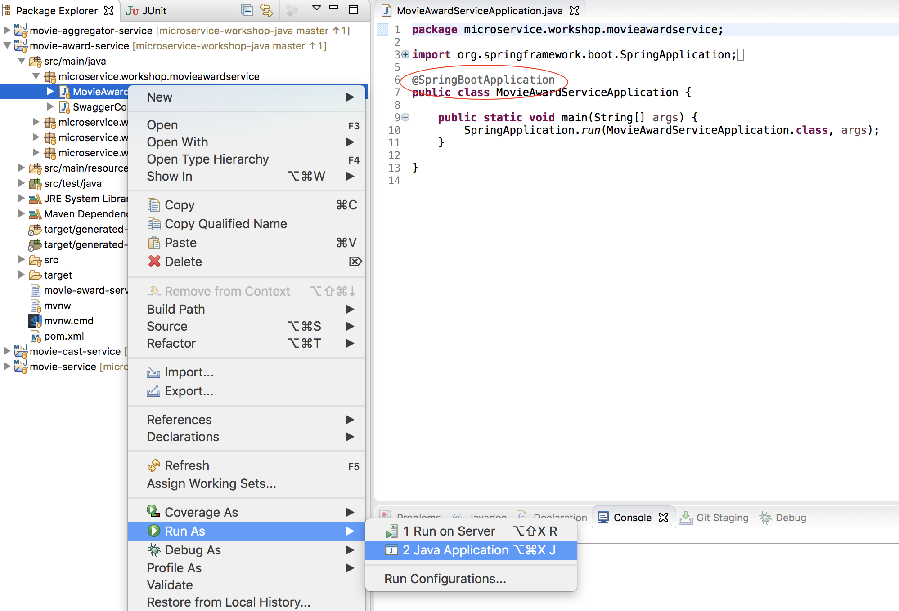
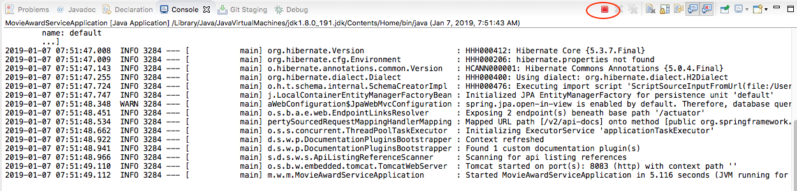
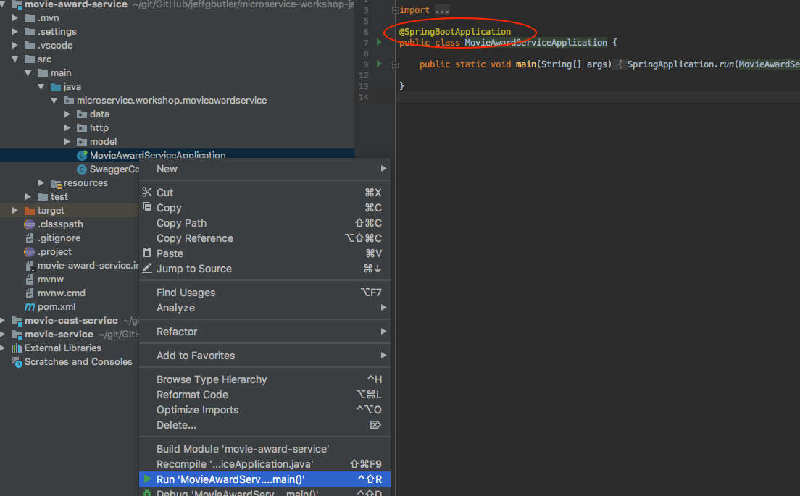
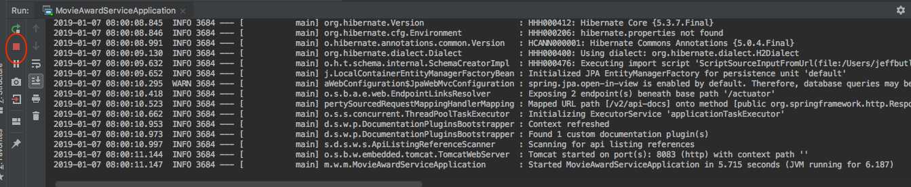
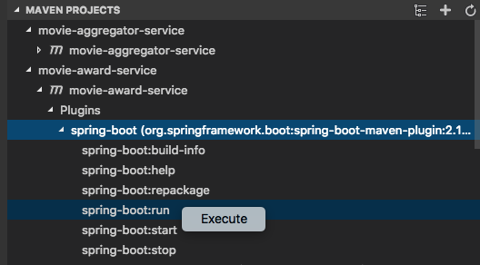
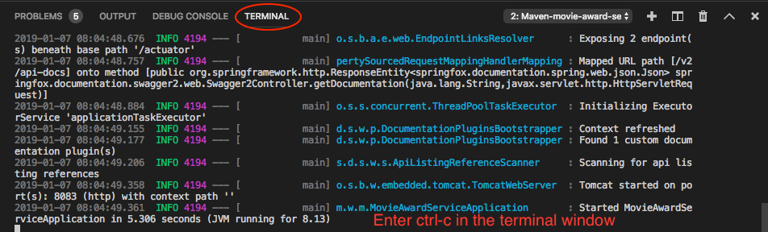

Microservice Resiliency
Spring Boot Level Set
https://github.com/jeffgbutler/microservice-workshop-java/
https://jeffgbutler.github.io/microservice-workshop-java/
What is Spring Boot?
- Spring Based Framework
- Embedded Server (Tomcat, Jetty, etc.) - make JAR not WAR
- Currated Dependencies
- Sensible Defaults
- Autoconfiguration Magic
- No XML
- The de factor standard for microservices in Java
- Integrates seemlessly with Pivotal Cloud Foundry
What is the Spring Initializer?
- https://start.spring.io
- Website that will create a starter project for Spring Boot applications
- Generates projects using Maven or Gradle as the build system
- Generates projects using Java, Kotlin, or Groovy as the language
- Knows about dozens of dependencies and features that can be easily integrated into a Spring Boot project
- Never ever create another
pom.xml file from scratch!
Spring Actuator
- Exposes a standard set of endpoints for you application - accessible through JMX and web
- Most web endpoints are disabled by default
/actuator/health shows health status of your application/actuator/info shows basic information about your application- Highly configurable with sensible defaults
Spring JPA
- Used to create repositories (ORM to RDB)
- Includes findById, findAll, save, etc.
- Declarative method names for extra methods
- Very little code required
Spring REST
- Used to create REST controllers
- Accepts/Returns JSON by default
- Hand coded REST methods, but very simple
- Alternative: Spring Data REST will create HATEOAS/HAL based web services with no code at all
Swagger
- Swagger is a REST API documentation standard and test UI
- Swagger integration with Spring Boot is through Springfox
- Unfortunately, Springfox is not on the Spring initializr, so it must be configured by hand
- The swagger UI is available at
/swagger-ui.html
- All exercise projects are configured for Swagger, and the default page will redirect to Swagger
Starting Spring Boot in Eclipse

Stopping Spring Boot in Eclipse

Starting Spring Boot in IntelliJ

Stopping Spring Boot in IntelliJ

Starting Spring Boot in VS Code

Stopping Spring Boot in VS Code

Demo
Danger - Live Coding Ahead!